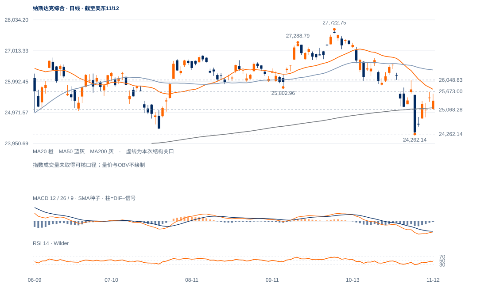

新窗口的隔离已消失
11日上缺口25286.83—25326.69，12日低25068.28已穿过下沿，完成盘中回补；收25366.09又回到缺口上沿之上。回补与收盘失守是不同事件。
未来1—5日更倾向反抽后反复；25130附近承接仍有意义，25673—26053旧下缺口未收复前，1—3周仍属调整中的修复。

查看大图 ↗11日上缺口25286.83—25326.69，12日低25068.28已穿过下沿，完成盘中回补；收25366.09又回到缺口上沿之上。回补与收盘失守是不同事件。
现价仅高于200日线25130.16约0.44ATR，低于20日25740.01。前低24262.14仍在，短线能反抽，但尚无较高低点后再破前高的完整向上结构。
10月30日下缺口25673.00—26053.16未被完全填补，11月4日26048.83中峰位于其上部；这是修复质量比单次RSI回升更重要的检验。
12日低开后收回25327，前低保持；若接续回收25740并向26049推进，卖方跟进不足的解释会增强。